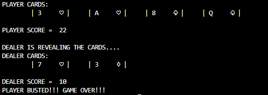
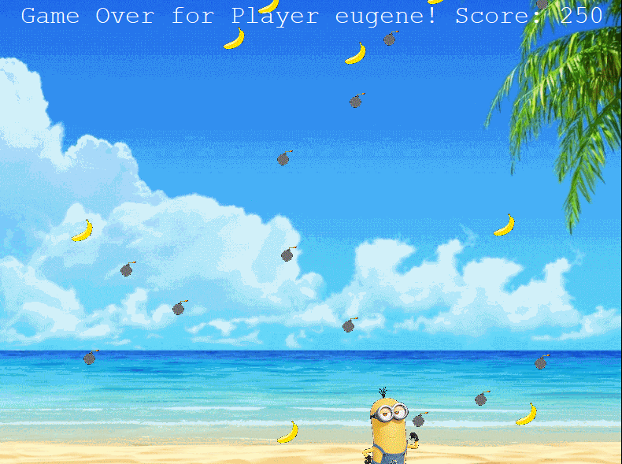
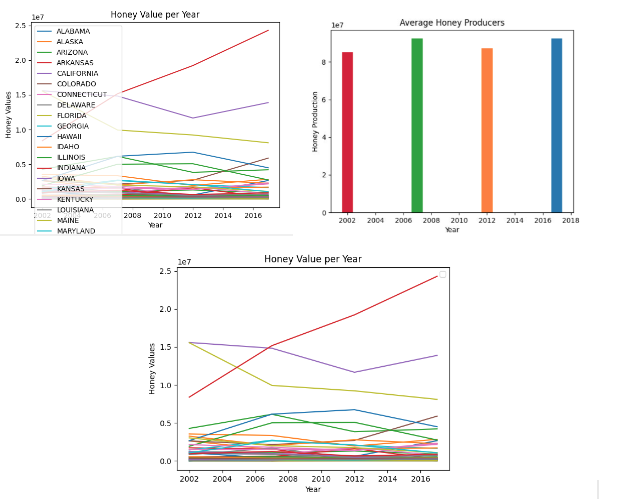

Home
Portfolio
About Me
This is my Portfolio Page!
Blackjack 1.1.9 Project

This game lets the user play Blackjack by pressing the enter button to draw cards and use "H" to hit or "S" to stay. Many loops, variables, and conditional executions were used to create this game.
Banana Catch 1.2.5 Project

This game's objective is for the user to play as the minion and catch the bananas falling and avoid the bombs from the sky. The user has three lives and loses one whenever they catch a bomb. They have the option to choose between two songs and to play again if they lose all three lives. A lot of color and movement is involved with this game and functions that reduce the duplication of code. There are responses to events that occur, along with list indexing for the leaderboard.
Scratch Project
This game by my partner and I is a car racing game where the user controls one car using the left arrow key and another car using the right arrow key. The goal of the game is to get as many coins as you can while avoiding the cones. When the user hits a cone, the game ends.
Making Meaning from Data 3.2.4 Project

This project shows the total honey value per year and average honey producers in different states over a course of time. This data is from the USDA and the graphs label the states to represent the relationship of the data through the years. These graphs help give an understanding of how honey production and the value of it has drastically changed in some states.
Project 4.1.4 BeeSmart Hive Finding
This presentation my partners and I created explains the simulation model of bees searching for a hive. The model shows the proccess of the bees going to different hives and returning to their swarm where they create a dance path for other bees to travel to the hive they found. The model lets the user change the number of hives, the explore time of the bees, and the minimum number of bees exploring. The only turtles used in this simulation are the bees and the hives. Our group concluded that we should help increase the productivity and effiency of bees.
Black Jack game written in Python.
Modified bits in pictures.
Use data files to create graphs.
Using netlogo do remix of illusions.
Interactive Fiction Rags to Riches.